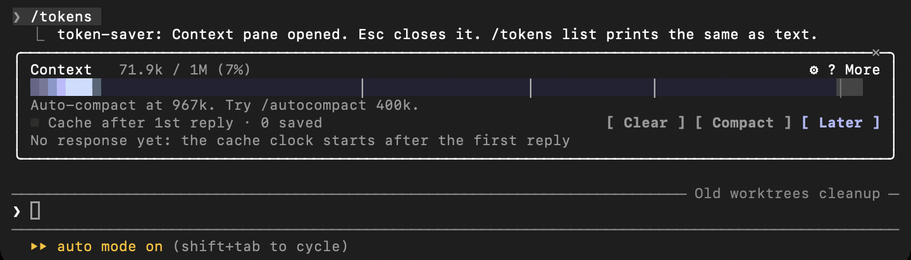
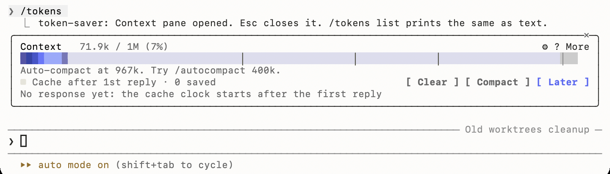

A Claude Code mod that quiets noisy commands, trims huge output, refuses a /compact that would re-send a cold cache, keeps the cache warm while you think, and shows you a receipt it can stand behind.
$ claude plugin marketplace add dbrownjave/claude-token-saver
$ claude plugin install token-saver@token-saver
Or the full pack, with the Python modules and the settings preflight:
$ git clone https://github.com/dbrownjave/claude-token-saver && cd claude-token-saver && ./install.sh
Local Claude Code CLI or desktop app · Python 3 (stdlib only) · MIT · what install changes

/tokens in the terminal. More screenshots under Light and dark.The pane follows your terminal's /config Theme. The desktop app tells a mod nothing about its appearance, so pick the palette in /tokens settings.

Six things, each one small, each one on every turn. Everything is a toggle in /config; nothing edits your settings behind your back.
git status becomes git status -sb, test runners get their quietest reporter, before they run. Your own rules in quiet.json.
Huge successful stdout is cut to its head and tail before Claude reads it. Failures are never trimmed. The full log is kept on disk, with the grep to read it.
A /compact on a cold cache re-sends the whole conversation at write price. The mod refuses it, names the cost, and points at /handoff then /clear. Auto-compaction is never blocked.
API billing, 5-minute TTL: just before the cache lapses, one tiny read (≈0.1× input price) restarts it, so your next message hits the cache instead of paying a 1.25× re-write. Capped, stops on a miss.
/tokens: where the window went, your marks, the cache clock, a receipt line by line, and buttons that run /mcp, /memory, /loadout. Terminal, desktop and phone.
Every skill in ~/.claude/skills costs its description on every turn. /loadout shows the price, parks what you have not used in 30 days, and links one back per repo.
A token-saving tool that pads its own score is worthless. The Saved figure counts only what the plugin itself did.
/compact would have re-written, at the 1.25× cache-write price.// plugins/token-saver/hooks/register.js const sources = [ { label: 'Trimmed output', tok: T.keptOut }, { label: 'Compactions vetoed', tok: Math.round(T.vetoTokens * 1.25) }, { label: 'Keep-warm', tok: kw.savedTok - kw.costTok }, ] // Claude's own prompt cache: reported, never summed const cacheInfo = { read: T.cacheRead, line: `Prompt cache read ${fmtK(T.cacheRead)} tok at a tenth of the price — Claude's own, not counted` }
Locked in by tests: a session with 150k cache reads and nothing trimmed shows Saved 0 tok.
Claude Code mods are plugins made of function hooks: one register(on, options) module that can rewrite a tool call, sit on a compaction, and draw live UI in a pane. We wrote the reference we wished we had.
Every event, every $ noun, every element and its props, the four surfaces and what each will not draw, the test harness, and a gotchas list earned the hard way. Read it.
Open the repo in Claude Code and it knows how to edit the mod (mod-authoring) and ship it (release). The rules that cost us a bug each are written down so you do not pay for them twice.
One command. No questions. Nothing of yours is edited or reordered; overlaps with hooks you already have are printed as one line each.
# the mod, from a terminal, at user scope claude plugin marketplace add dbrownjave/claude-token-saver claude plugin install token-saver@token-saver # or the full pack git clone https://github.com/dbrownjave/claude-token-saver cd claude-token-saver ./install.sh # or: ./install.sh --dry-run # open a new session, then: /tokens # the Context pane /loadout # your skills, priced
# already in a session: pick it up without restarting /reload-plugins # one session, no install claude --plugin-dir ./plugins/token-saver # take it all out ./install.sh --uninstall
Requires Claude Code 2.1.287 or later for the mod; older builds get the same behaviour from the pack's Python hooks, and the installer says which you got. Claude Code on the web does not see ~/.claude; this is for the local CLI and desktop app.